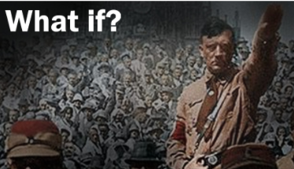
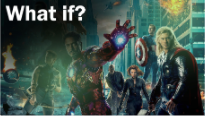
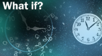
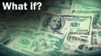
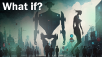
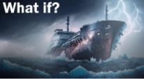

Afleveringen
Episodes
Hier vind je de 6 afleveringen die je meenemen naar alternatieve realiteiten en uitdagende scenario’s.
-

Episode 1: Leven in een Nazi-tijdperk?
Stel je een wereld voor waar vrijheid plaatsmaakt voor controle. Wat als Duitsland de Tweede Wereldoorlog had gewonnen? Zou je smartphone ooit zijn uitgevonden? We duiken erin!
-

Episode 2: Marvel Reality?
Stel je een wereld voor waar goden wandelen onder mensen, waar technologie duizend jaar verder is dan onze tijd, en waar elke straatkruising een kans biedt om een superheld of schurk tegen te komen. Wat als we daar echt leefden? Hoe zou onze realiteit veranderen als we een universum deelden met Spider-Man, Iron Man, en de Avengers? Dit is de wereld van Marvel.
-

Episode 3: De Tijdlijn Twisten: Wat Als Tijdreizen Bestond?
Stel je voor je stapt in een machine die de wetten van tijd en ruimte. Met een druk op de knop bevind je je in het verleden, de toekomst, of een alternatieve tijdlijn. Wat als tijdreizen mogelijk was? Hoe zou dat onze wereld, onze keuzes en ons begrip van geschiedenis beïnvloeden?
-

Episode 4: Gelijke Lonen, Oneerlijke Wereld?
Wat als iedereen hetzelfde inkomen had? Op het eerste gezicht lijkt dit eerlijk, maar is dat wel zo? Zwaar werk zou hetzelfde beloond worden als licht werk, en een zakenman zou niet meer verdienen dan een tiener in de supermarkt. Hoe lang zou zo’n systeem standhouden? Ontdek het in deze aflevering!
-

Episode 5: De nieuwe revolutie?
Wat gebeurt er als robots slimmer zijn dan wij? In deze aflevering onderzoeken we hoe een wereld gedomineerd door AI eruitziet. Kunnen we meeliften of moeten we vrezen?
-

Episode 6: De Ongezonken Titanic: Een Wereld Zonder Ramp?
Grote gebeurtenissen of rampen kunnen vaak een enorm groot effect hebben op de toekomst, en het zinken van de Titanic is daar zeker een van. Veel mensen vragen zich af hoe & wat de wereld nu zou zijn als de Titanic nooit gezonken was, wat er anders zou zijn en wat toch hetzelfde zou zijn. In deze aflevering komen we daarachter!